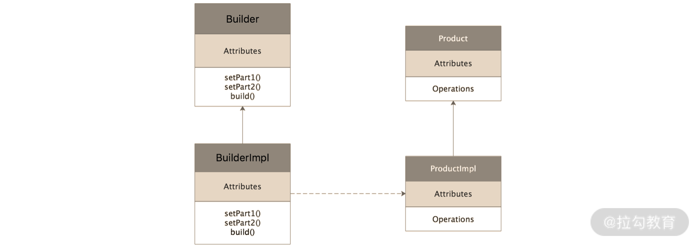
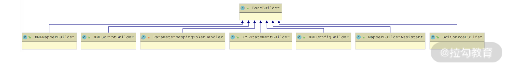
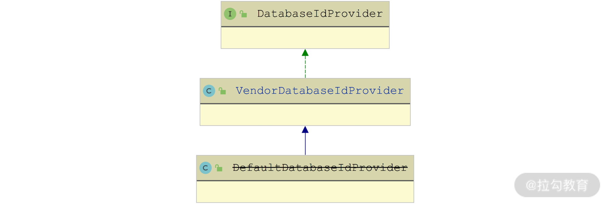

- 00 开篇词 领略 MyBatis 设计思维，突破持久化技术瓶颈.md.html
- 01 常见持久层框架赏析，到底是什么让你选择 MyBatis？.md.html
- 02 订单系统持久层示例分析，20 分钟带你快速上手 MyBatis.md.html
- 03 MyBatis 源码环境搭建及整体架构解析.md.html
- 04 MyBatis 反射工具箱：带你领略不一样的反射设计思路.md.html
- 05 数据库类型体系与 Java 类型体系之间的“爱恨情仇”.md.html
- 06 日志框架千千万，MyBatis 都能兼容的秘密是什么？.md.html
- 07 深入数据源和事务，把握持久化框架的两个关键命脉.md.html
- 08 Mapper 文件与 Java 接口的优雅映射之道.md.html
- 09 基于 MyBatis 缓存分析装饰器模式的最佳实践.md.html
- 10 鸟瞰 MyBatis 初始化，把握 MyBatis 启动流程脉络（上）.md.html
- 11 鸟瞰 MyBatis 初始化，把握 MyBatis 启动流程脉络（下）.md.html
- 12 深入分析动态 SQL 语句解析全流程（上）.md.html
- 13 深入分析动态 SQL 语句解析全流程（下）.md.html
- 14 探究 MyBatis 结果集映射机制背后的秘密（上）.md.html
- 15 探究 MyBatis 结果集映射机制背后的秘密（下）.md.html
- 16 StatementHandler：参数绑定、SQL 执行和结果映射的奠基者.md.html
- 17 Executor 才是执行 SQL 语句的幕后推手（上）.md.html
- 18 Executor 才是执行 SQL 语句的幕后推手（下）.md.html
- 19 深入 MyBatis 内核与业务逻辑的桥梁——接口层.md.html
- 20 插件体系让 MyBatis 世界更加精彩.md.html
- 21 深挖 MyBatis 与 Spring 集成底层原理.md.html
- 22 基于 MyBatis 的衍生框架一览.md.html
- 23 结束语 会使用只能默默“搬砖”，懂原理才能快速晋升.md.html
10 鸟瞰 MyBatis 初始化，把握 MyBatis 启动流程脉络（上）
很多开源框架之所以能够流行起来，是因为它们解决了领域内的一些通用问题。但在实际使用这些开源框架的时候，我们都是要解决通用问题中的一个特例问题，所以这时我们就需要使用一种方式来控制开源框架的行为，这就是开源框架提供各种各样配置的核心原因之一。
现在控制开源框架行为主流的配置方式就是 XML 配置方式和注解方式。在《02 | 订单系统持久层示例分析，20 分钟带你快速上手 MyBatis》这一讲中我们介绍过，MyBatis 有两方面的 XML 配置，一个是 mybatis-config.xml 配置文件中的整体配置，另一个是 Mapper.xml 配置文件中的 SQL 语句。当然，MyBatis 中也有注解，前面的课程中也多少有涉及，其核心实现与 XML 配置基本类似，所以这一讲我们就重点分析 XML 配置的初始化过程，注解相关的内容就留给你自己分析了。
在初始化的过程中，MyBatis 会读取 mybatis-config.xml 这个全局配置文件以及所有的 Mapper 映射配置文件，同时还会加载这两个配置文件中指定的类，解析类中的相关注解，最终将解析得到的信息转换成配置对象。完成配置加载之后，MyBatis 就会根据得到的配置对象初始化各个模块。
MyBatis 在加载配置文件、创建配置对象的时候，会使用到经典设计模式中的构造者模式，所以下面我们就来先介绍一下构造者模式的知识点。
构造者模式
构造者模式最核心的思想就是将创建复杂对象的过程与复杂对象本身进行拆分。通俗来讲，构造者模式是将复杂对象的创建过程分解成了多个简单步骤，在创建复杂对象的时候，只需要了解复杂对象的基本属性即可，而不需要关心复杂对象的内部构造过程。这样的话，使用方只需要关心这个复杂对象要什么数据，而不再关心内部细节。
构造者模式的类图如下所示：

构造者模式类图
从图中，我们可以看到构造者模式的四个核心组件。
- Product 接口：复杂对象的接口，定义了要创建的目标对象的行为。
- ProductImpl 类：Product 接口的实现，它真正要创建的复杂对象，其中实现了我们需要的复杂业务逻辑。
- Builder 接口：定义了构造 Product 对象的每一步行为。
- BuilderImpl 类：Builder 接口的具体实现，其中具体实现了构造一个 Product 的每一个步骤，例如上图中的 setPart1()、setPart2() 等方法，都是用来构造 ProductImpl 对象的各个部分。在完成整个 Product 对象的构造之后，我们会通过 build() 方法返回这个构造好的 Product 对象。
使用构造者模式一般有两个目的。第一个目的是将使用方与复杂对象的内部细节隔离，从而实现解耦的效果。使用方提供的所有信息，都是由 Builder 这个“中间商”接收的，然后由 Builder 消化这些信息并构造出一个完整可用的 Product 对象。第二个目的是简化复杂对象的构造过程。在很多场景中，复杂对象可能有很多默认属性，这时我们就可以将这些默认属性封装到 Builder 中，这样就可以简化创建复杂对象所需的信息。
通过构建者模式的类图我们还可以看出，每个 BuilderImpl 实现都是能够独立创建出对应的 ProductImpl 对象，那么在程序需要扩展的时候，我们只需要添加新的 BuilderImpl 和 ProductImpl，就能实现功能的扩展，这完全符合“开放-封闭原则”。
mybatis-config.xml 解析全流程
介绍完构造者模式相关的知识点之后，下面我们正式开始介绍 MyBatis 的初始化过程。
MyBatis 初始化的第一个步骤就是加载和解析 mybatis-config.xml 这个全局配置文件，入口是 XMLConfigBuilder 这个 Builder 对象，它由 SqlSessionFactoryBuilder.build() 方法创建。XMLConfigBuilder 会解析 mybatis-config.xml 配置文件得到对应的 Configuration 全局配置对象，然后 SqlSessionFactoryBuilder 会根据得到的 Configuration 全局配置对象创建一个 DefaultSqlSessionFactory 对象返回给上层使用。
这里创建的 XMLConfigBuilder 对象的核心功能就是解析 mybatis-config.xml 配置文件。XMLConfigBuilder 有一部分能力继承自 BaseBuilder 抽象类，具体继承关系如下图所示：

BaseBuilder 继承关系图
BaseBuilder 抽象类扮演了构造者模式中 Builder 接口的角色，下面我们先来看 BaseBuilder 中各个字段的定义。
- configuration（Configuration 类型）：MyBatis 的初始化过程就是围绕 Configuration 对象展开的，我们可以认为 Configuration 是一个单例对象，MyBatis 初始化解析到的全部配置信息都会记录到 Configuration 对象中。
- typeAliasRegistry（TypeAliasRegistry 类型）：别名注册中心。比如，《02 讲的订单系统》示例中，我们在 mybatis-config.xml 配置文件中，使用 标签为很多类定义了别名。
- typeHandlerRegistry（TypeHandlerRegistry 类型）：TypeHandler 注册中心。除了定义别名之外，我们在 mybatis-config.xml 配置文件中，还可以使用
<typeHandlers>标签添加自定义 TypeHandler 实现，实现数据库类型与 Java 类型的自定义转换，这些自定义的 TypeHandler 都会记录在这个 TypeHandlerRegistry 对象中。
除了关联 Configuration 对象之外，BaseBuilder 还提供了另外两个基本能力：
- 解析别名，核心逻辑是在 resolveAlias() 方法中实现的，主要依赖于 TypeAliasRegistry 对象；
- 解析 TypeHandler，核心逻辑是在 resolveTypeHandler() 方法中实现的，主要依赖于 TypeHandlerRegistry 对象。
了解了 BaseBuilder 提供的基础能力之后，我们回到 XMLConfigBuilder 这个 Builder 实现类，看看它是如何解析 mybatis-config.xml 配置文件的。
首先我们来了解一下 XMLConfigBuilder 的核心字段。
- parsed（boolean 类型）：状态标识字段，记录当前 XMLConfigBuilder 对象是否已经成功解析完 mybatis-config.xml 配置文件。
- parser（XPathParser 类型）：XPathParser 对象是一个 XML 解析器，这里的 parser 对象就是用来解析 mybatis-config.xml 配置文件的。
- environment（String 类型）： 标签定义的环境名称。
- localReflectorFactory（ReflectorFactory 类型）：ReflectorFactory 接口的核心功能是实现对 Reflector 对象的创建和缓存。
在 SqlSessionFactoryBuilder.build() 方法中也可以看到，XMLConfigBuilder.parse() 方法触发了 mybatis-config.xml 配置文件的解析，其中的 parseConfiguration() 方法定义了解析 mybatis-config.xml 配置文件的完整流程，核心步骤如下：
- 解析
<properties>标签； - 解析
<settings>标签； - 处理日志相关组件；
- 解析
<typeAliases>标签； - 解析
<plugins>标签； - 解析
<objectFactory>标签； - 解析
<objectWrapperFactory>标签； - 解析
<reflectorFactory>标签； - 解析
<environments>标签； - 解析
<databaseIdProvider>标签； - 解析
<typeHandlers>标签； - 解析
<mappers>标签。
从 parseConfiguration()方法中，我们可以清晰地看到 XMLConfigBuilder 对 mybatis-config.xml 配置文件中各类标签的解析方法，下面我们就逐一介绍这些方法的核心实现。
1. 处理<properties>标签
我们可以通过 <properties> 标签定义 KV 信息供 MyBatis 使用，propertiesElement() 方法的核心逻辑就是解析 mybatis-config.xml 配置文件中的 <properties> 标签。
从 <properties> 标签中解析出来的 KV 信息会被记录到一个 Properties 对象（也就是 Configuration 全局配置对象的 variables 字段），在后续解析其他标签的时候，MyBatis 会使用这个 Properties 对象中记录的 KV 信息替换匹配的占位符。
2. 处理<settings>标签
MyBatis 中有很多全局性的配置，例如，是否使用二级缓存、是否开启懒加载功能等，这些都是通过 mybatis-config.xml 配置文件中的 <settings> 标签进行配置的。
XMLConfigBuilder.settingsAsProperties() 方法的核心逻辑就是解析 <settings> 标签，并将解析得到的配置信息记录到 Configuration 这个全局配置对象的同名属性中，具体实现如下：
private Properties settingsAsProperties(XNode context) {
if (context == null) {
return new Properties();
}
// 处理<settings>标签的所有子标签，也就是<setting>标签，将其name属性和value属性
// 整理到Properties对象中保存
Properties props = context.getChildrenAsProperties();
// 创建Configuration对应的MetaClass对象
MetaClass metaConfig = MetaClass.forClass(Configuration.class, localReflectorFactory);
// 检测Configuration对象中是否包含每个配置项的setter方法
for (Object key : props.keySet()) {
if (!metaConfig.hasSetter(String.valueOf(key))) {
throw new BuilderException("The setting " + key + " is not known. Make sure you spelled it correctly (case sensitive).");
}
}
return props;
}
3. 处理<typeAliases>和<typeHandlers>标签
XMLConfigBuilder 中提供了 typeAliasesElement() 方法和 typeHandlerElement() 方法，分别用来负责处理 <typeAliases> 标签和 <typeHandlers> 标签，解析得到的别名信息和 TypeHandler 信息就会分别记录到 TypeAliasRegistry 和 TypeHandlerRegistry（前面介绍 BaseHandler 的时候，我们已经简单介绍过这两者了）。
下面我们以 typeHandlerElement() 方法为例来分析一下这个过程：
private void typeHandlerElement(XNode parent) {
if (parent != null) {
for (XNode child : parent.getChildren()) { // 处理全部<typeHandler>子标签
if ("package".equals(child.getName())) {
// 如果指定了package属性，则扫描指定包中所有的类，
// 并解析@MappedTypes注解，完成TypeHandler的注册
String typeHandlerPackage = child.getStringAttribute("name");
typeHandlerRegistry.register(typeHandlerPackage);
} else {
// 如果没有指定package属性，则尝试获取javaType、jdbcType、handler三个属性
String javaTypeName = child.getStringAttribute("javaType");
String jdbcTypeName = child.getStringAttribute("jdbcType");
String handlerTypeName = child.getStringAttribute("handler");
// 根据属性确定TypeHandler类型以及它能够处理的数据库类型和Java类型
Class<?> javaTypeClass = resolveClass(javaTypeName);
JdbcType jdbcType = resolveJdbcType(jdbcTypeName);
Class<?> typeHandlerClass = resolveClass(handlerTypeName);
// 调用TypeHandlerRegistry.register()方法注册TypeHandler
if (javaTypeClass != null) {
if (jdbcType == null) {
typeHandlerRegistry.register(javaTypeClass, typeHandlerClass);
} else {
typeHandlerRegistry.register(javaTypeClass, jdbcType, typeHandlerClass);
}
} else {
typeHandlerRegistry.register(typeHandlerClass);
}
}
}
}
}
4. 处理<plugins>标签
我们知道 MyBatis 是一个非常易于扩展的持久层框架，而插件就是 MyBatis 提供的一种重要扩展机制。
我们可以自定义一个实现了 Interceptor 接口的插件来扩展 MyBatis 的行为，或是拦截 MyBatis 的一些默认行为。插件的工作机制我们会在后面的课时中详细分析，这里我们重点来看 MyBatis 初始化过程中插件配置的加载，也就是 XMLConfigBuilder 中的 pluginElement()方法，该方法的核心就是解析 <plugins> 标签中配置的自定义插件，具体实现如下：
private void pluginElement(XNode parent) throws Exception {
if (parent != null) {
// 遍历全部的<plugin>子标签
for (XNode child : parent.getChildren()) {
// 获取每个<plugin>标签中的interceptor属性
String interceptor = child.getStringAttribute("interceptor");
// 获取<plugin>标签下的其他配置信息
Properties properties = child.getChildrenAsProperties();
// 初始化interceptor属性指定的自定义插件
Interceptor interceptorInstance = (Interceptor) resolveClass(interceptor).getDeclaredConstructor().newInstance();
// 初始化插件的配置
interceptorInstance.setProperties(properties);
// 将Interceptor对象添加到Configuration的插件链中保存，等待后续使用
configuration.addInterceptor(interceptorInstance);
}
}
}
5. 处理<objectFactory>标签
在前面《04 | MyBatis 反射工具箱：带你领略不一样的反射设计思路》中我们提到过，MyBatis 支持自定义 ObjectFactory 实现类和 ObjectWrapperFactory。XMLConfigBuilder 中的 objectFactoryElement() 方法就实现了加载自定义 ObjectFactory 实现类的功能，其核心逻辑就是解析 <objectFactory> 标签中配置的自定义 ObjectFactory 实现类，并完成相关的实例化操作，相关的代码实现如下：
private void objectFactoryElement(XNode context) throws Exception {
if (context != null) {
// 获取<objectFactory>标签的type属性
String type = context.getStringAttribute("type");
// 根据type属性值，初始化自定义的ObjectFactory实现
ObjectFactory factory = (ObjectFactory) resolveClass(type).getDeclaredConstructor().newInstance();
// 初始化ObjectFactory对象的配置
Properties properties = context.getChildrenAsProperties();
factory.setProperties(properties);
// 将ObjectFactory对象记录到Configuration这个全局配置对象中
configuration.setObjectFactory(factory);
}
除了 <objectFactory> 标签之外，我们还可以通过 <objectWrapperFactory> 标签和 <reflectorFactory> 标签配置自定义的 ObjectWrapperFactory 实现类和 ReflectorFactory 实现类，这两个标签的解析分别对应 objectWrapperFactoryElement() 方法和 reflectorFactoryElement() 方法，两者实现与 objectFactoryElement() 方法实现类似，这里就不再展示，你若感兴趣的话可以参考源码进行学习。
6. 处理<environments>标签
在 MyBatis 中，我们可以通过 <environment> 标签为不同的环境添加不同的配置，例如，线上环境、预上线环境、测试环境等，每个
environmentsElement() 方法中实现了 XMLConfigBuilder 处理 <environments> 标签的核心逻辑，它会根据 XMLConfigBuilder.environment 字段值，拿到正确的 <environment> 标签，然后解析这个环境中使用的 TransactionFactory、DataSource 等核心对象，也就知道了 MyBatis 要请求哪个数据库、如何管理事务等信息。
下面是 environmentsElement() 方法的核心逻辑：
private void environmentsElement(XNode context) throws Exception {
if (context != null) {
if (environment == null) { // 未指定使用的环境id，默认获取default值
environment = context.getStringAttribute("default");
}
// 获取<environment>标签下的所有配置
for (XNode child : context.getChildren()) {
// 获取环境id
String id = child.getStringAttribute("id");
if (isSpecifiedEnvironment(id)) {
// 获取<transactionManager>、<dataSource>等标签，并进行解析，其中会根据配置信息初始化相应的TransactionFactory对象和DataSource对象
TransactionFactory txFactory = transactionManagerElement(child.evalNode("transactionManager"));
DataSourceFactory dsFactory = dataSourceElement(child.evalNode("dataSource"));
DataSource dataSource = dsFactory.getDataSource();
// 创建Environment对象，并关联创建好的TransactionFactory和DataSource
Environment.Builder environmentBuilder = new Environment.Builder(id)
.transactionFactory(txFactory)
.dataSource(dataSource);
// 将Environment对象记录到Configuration中，等待后续使用
configuration.setEnvironment(environmentBuilder.build());
}
}
}
}
7. 处理<databaseIdProvider>标签
通过前面课时的介绍可知，在 MyBatis 中编写的都是原生的 SQL 语句，而很多数据库产品都会有一些 SQL 方言，这些方言与标准 SQL 不兼容。
在 mybatis-config.xml 配置文件中，我们可以通过 <databaseIdProvider> 标签定义需要支持的全部数据库的 DatabaseId，在后续编写 Mapper 映射配置文件的时候，就可以为同一个业务场景定义不同的 SQL 语句（带有不同的 DataSourceId），来支持不同的数据库，这里就是靠 DatabaseId 来确定哪个 SQL 语句支持哪个数据库的。
databaseIdProviderElement() 方法是 XMLConfigBuilder 处理 <databaseIdProvider> 标签的地方，其中的核心就是获取 DatabaseId 值，具体实现如下：
private void databaseIdProviderElement(XNode context) throws Exception {
DatabaseIdProvider databaseIdProvider = null;
if (context != null) {
// 获取type属性值
String type = context.getStringAttribute("type");
if ("VENDOR".equals(type)) { // 兼容操作
type = "DB_VENDOR";
}
// 初始化DatabaseIdProvider
Properties properties = context.getChildrenAsProperties();
databaseIdProvider = (DatabaseIdProvider) resolveClass(type).getDeclaredConstructor().newInstance();
databaseIdProvider.setProperties(properties);
}
Environment environment = configuration.getEnvironment();
if (environment != null && databaseIdProvider != null) {
// 通过DataSource获取DatabaseId，并保存到Configuration中，等待后续使用
String databaseId = databaseIdProvider.getDatabaseId(environment.getDataSource());
configuration.setDatabaseId(databaseId);
}
}
可以看到，解析<databaseIdProvider> 标签之后会得到一个 DatabaseIdProvider 对象，其核心方法是 getDatabaseId() 方法，主要是根据前面解析得到的 DataSource 对象来生成 DatabaseId。DatabaseIdProvider 的继承关系如下图所示：

DatabaseIdProvider 继承关系图
从继承关系图中可以看出，DefaultDatabaseIdProvider 是个空实现，而且已被标记为过时了，所以这里我们就重点来看 VendorDatabaseIdProvider 实现。
在 getDatabaseId() 方法中，VendorDatabaseIdProvider 首先会从 DataSource 中拿到数据库的名称，然后根据 <databaseIdProvider> 标签配置和 DataSource 返回的数据库名称，确定最终的 DatabaseId 标识，具体实现如下：
public String getDatabaseId(DataSource dataSource) {
// 省略边界检查和异常处理
return getDatabaseName(dataSource);
}
private String getDatabaseName(DataSource dataSource) throws SQLException {
// 从数据库连接中，获取数据库名称
String productName = getDatabaseProductName(dataSource);
if (this.properties != null) {
// 根据<databaseIdProvider>标签配置，查找自定义数据库名称
for (Map.Entry<Object, Object> property : properties.entrySet()) {
if (productName.contains((String) property.getKey())) {
return (String) property.getValue(); // 返回配置的value
}
}
return null;
}
return productName;
}
8. 处理<mappers>标签
除了 mybatis-config.xml 这个全局配置文件之外，MyBatis 初始化的时候还会加载 <mappers> 标签下定义的 Mapper 映射文件。<mappers> 标签中会指定 Mapper.xml 映射文件的位置，通过解析 <mappers> 标签，MyBatis 就能够知道去哪里加载这些 Mapper.xml 文件了。
mapperElement() 方法就是 XMLConfigBuilder 处理 <mappers> 标签的具体实现，其中会初始化 XMLMapperBuilder 对象来加载各个 Mapper.xml 映射文件。同时，还会扫描 Mapper 映射文件相应的 Mapper 接口，处理其中的注解并将 Mapper 接口注册到 MapperRegistry 中。
mapperElement() 方法的具体实现如下：
private void mapperElement(XNode parent) throws Exception {
if (parent != null) {
for (XNode child : parent.getChildren()) { // 遍历每个子标签
if ("package".equals(child.getName())) {
// 如果指定了<package>子标签，则会扫描指定包内全部Java类型
String mapperPackage = child.getStringAttribute("name");
configuration.addMappers(mapperPackage);
} else {
// 解析<mapper>子标签，这里会获取resource、url、class三个属性，这三个属性互斥
String resource = child.getStringAttribute("resource");
String url = child.getStringAttribute("url");
String mapperClass = child.getStringAttribute("class");
// 如果<mapper>子标签指定了resource或是url属性，都会创建XMLMapperBuilder对象，
// 然后使用这个XMLMapperBuilder实例解析指定的Mapper.xml配置文件
if (resource != null && url == null && mapperClass == null) {
ErrorContext.instance().resource(resource);
InputStream inputStream = Resources.getResourceAsStream(resource);
XMLMapperBuilder mapperParser = new XMLMapperBuilder(inputStream, configuration, resource, configuration.getSqlFragments());
mapperParser.parse();
} else if (resource == null && url != null && mapperClass == null) {
ErrorContext.instance().resource(url);
InputStream inputStream = Resources.getUrlAsStream(url);
XMLMapperBuilder mapperParser = new XMLMapperBuilder(inputStream, configuration, url, configuration.getSqlFragments());
mapperParser.parse();
} else if (resource == null && url == null && mapperClass != null) {
// 如果<mapper>子标签指定了class属性，则向MapperRegistry注册class属性指定的Mapper接口
Class<?> mapperInterface = Resources.classForName(mapperClass);
configuration.addMapper(mapperInterface);
} else {
throw new BuilderException("A mapper element may only specify a url, resource or class, but not more than one.");
}
}
}
}
}
总结
这一讲我们重点介绍了 MyBatis 初始化过程中对 mybatis-config.xml 全局配置文件的解析，深入分析了 mybatis-config.xml 配置文件中所有标签的解析流程，让你进一步了解这些配置加载的原理。同时，我们还介绍了构造者模式这一经典设计模式，它是整个 MyBatis 初始化逻辑的基础思想。